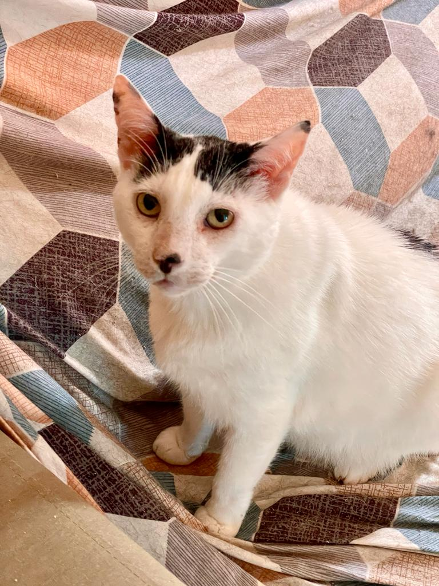
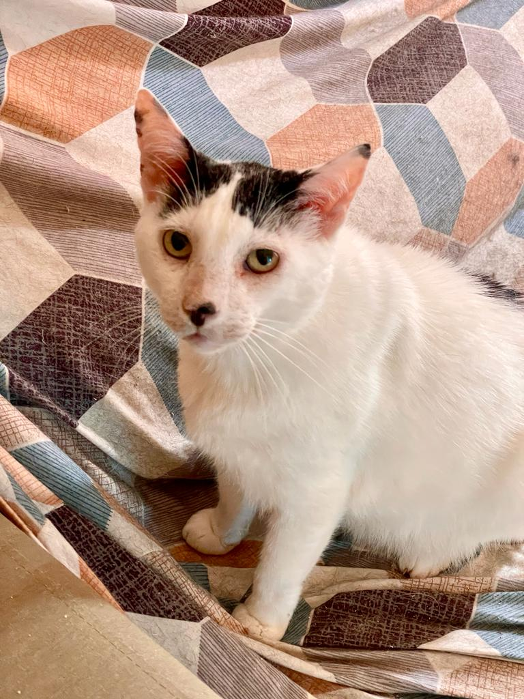

Sobre Eliane Silva: Uma Tryber bastante participativa nas aulas e mentorias, sempre com boas observações e contribuições à turma.
Sobre Stariel Isaac: Tryber bastante ativo e observador nas aulas. Demonstrou interesse em grupos de estudo pela manhã, que também é a minha preferência.
Sobre Lucas Pinho: Novo Tryber da turma, que chegou bastate comunicativo e atuante no Slack. Já fez muitas boas contribuições e está auxiliano na montagem de grupos de estudo.